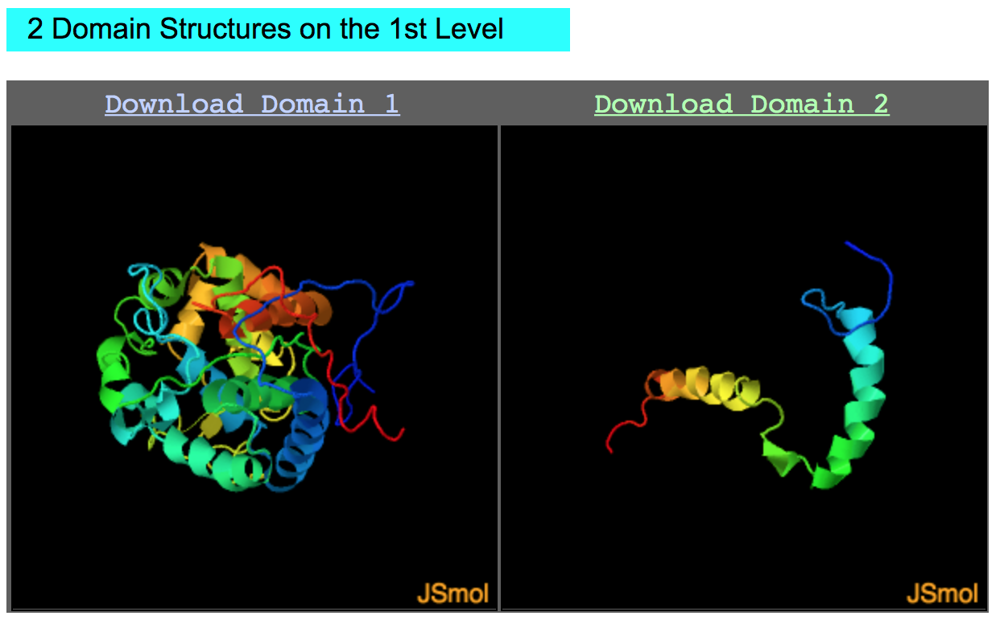

Modelagem Comparativa de Proteínas 2
Utilizando outros servidores e ferramentas para a modelagem de proteínas.
Objetivos
- Demonstrar outros servidores para obtenção de modelos 3D de proteínas, utilizando abordagens multifuncionais.
Proteína Alvo
Usaremos nestes exemplos a proteína O46921_SPIOL:
>O46921_SPIOL
LRSSPLVSHLFLRQRGGSAYVTKTRFSTKCYASDPAQLKNAREDIKELLQSKFCHPIMVR
LGWHDAGTYNKDIKEWPQRGGANGSLSFDVELRHGANAGLVNALKLLQPIKDKYSGVTYA
DLFQLASATAIEEAGGPTIPMKYGRVDATGPEQCPEEGRLPDAGPPSPAQHLRDVFYRMG
LDDKDIVALSGAHTLGRSRPERSGWGKPETKYTKDGPGAPGGQSWTAEWLKFDNSYFKDI
KEKRDADLLVLPTDAALFEDPSFKVYAEKYAADQEAFFKDYAEAHAKLSNQGAKFDPAEG
ITLNGTPAGAAPEKFVAAKYSSNKRSELSDSMKEKIRAEYEGFGGSPNKPLPTNYFLNIM
IVIGVLAVLSYLAGN
Escolhemos esta proteína para verificar se estas outras abordagens conseguem atribuir de forma não supervisionada alguma estrutura a porção C-terminal da tAPX.
AIDA
O Ab Initio Domain Assembly Server - AIDA é um servidor para obtenção de modelos que se baseia no conhecimento do potencial ab initio. Ele procurar os melhores arranjos para os domínios, mantendo a conectividade das cadeias. As estruturas são mantidas rígidas durante a simulação de minimização de energia, tratando apenas as regiões de link como completamente flexíveis. A grande vantagem do servidor AIDA é a capacidade de trabalhar com proteínas contendo domínios descontínuos, fixando suas posições relativas. Adicionalmente, ele também procura por domínios de sequência e ao achá-los divide-os iterativamente para alinhar com o modelo de PDB encontrado pelo programa de reconhecimento de folds FFAS-3D (Retirado do próprio site do AIDA).
A sua utilização é simples, e os seus resultados saem de forma rápida. Note que ele não é um programa de ab initio puro, embora utilize esta abordagem como parte de sua estratégia de modelagem.
Faremos a utilização do AIDA da forma mais simples, seguindos os passos abaixo:
- Abra a página do AIDA:

- Cole a sequência acima no espaço indicado.
- Insira o seu email e clique em
Submit
Resultados
Após algus minutos, o AIDA retornará os resultados. A página de resultados está dividida da seguinte forma:
Primeira Parte: Arquitetura dos domínios encontrados
- Funciona como um preditor de estrutura secundária. Nela um diagrama da sequência é descrito, com a posição de cada resíduo, o tipo de estrutura secundária e escore de confidência da predição.

Na figura acima os resultados não estão mostrados por inteiro.
- Logo abaixo deste diagrama temos a lista dos domínios, com o PDB similar e o Z-score.
- Perceba que a predição encontrou um domínio para a região C-terminal da O46921_SPIOL (a qual está ligada a membrana do tilacóide), com similaridade a cadeia B da estrutura 3BO0.
Segunda Parte: O modelo construído
- Uma figura interativa da estrutura predita, com link para download do arquivo.

Terceira Parte: As estruturas isoladas de cada domínio
- Figuras interativas da estrutura predita da região de cada domínio.

- Verifique no Domínio 2, a predição da estrutura da hélice transmembrana presente na região C-terminal da O46921_SPIOL.
- O arquivo PDB gerado pode ser baixado AQUI.
- Abra o arquivo utilizando o UCSF Chimera e o inspecione.
Não esqueça de fazer o download e salvar os resultados do AIDA.
PHYRE2
O Phyre2 é um conjunto de ferramentas disponíveis na web para prever e analisar a estrutura das proteínas (Kelley et al. 2015). Ele usa múltiplas abordagens (homologia, threading e refinamentos de loops via ab initio) para obter modelos de forma fácil e não supervisionada. As grandes vantagens do servidor Phyre2 são:
- Fácil de usar e rápido.
- Resultados confiáveis, principalmente com proteínas que possuam homologia com proteínas conhecidas.
- Autoexplicativo.
- Bons resultados quando buscas por homologia distante são necessárias.
O Phyre possui dois modos: normal e intensivo. Os mantenedores recomendam utilizar primeiro o modo normal, para depois passar para o intensivo.
Passos para a submissão
- Abra a página do Phyre2.

- Cole a sequência fasta da
O46921_SPIOLno local indicado. - Coloque o email de destino dos resultados.
- Selecione o modo
Normal. - Clique em
Phyre searche espere os resultados (demoram cerca de 30 minutos a 2 horas).
Resultados
Os resultados das análises com Phyre2 podem ser baixados ou ficam com um link disponível por 30 dias.
COs arquivos gerados para a modelagem da O46921_SPIOL podem ser diretamente baixados AQUI.
Os resultados do Phyre2 são mostrados na forma de um relatório, contendo os seguintes elementos:
Sumário dos resultados
- Nesta parte podem ser observados uma figura com o modelos, os links para download dos resultados, e outras informações sobre a modelagem. A parte que contem Confidence Summary é muito informativa, pois nela você saberá a confiança da modelagem ao longo da extensão da sequência.
- Logo abaixo, pode ser evidenciado a predição de estrutura secundária:
- E depois a predição de domínios e listagem dos templates:

- Sempre confira também a seção Multi-template and ab initio information. Nela você terá a informação de quantos resíduos tiveram de ser modelados por ab initio.
Questionamentos
Compare os resultados do Phyre2, com os outros resultados obtidos até agora. Houve discrepância? Qual?
I-TASSER
O I-TASSER (Iterative Threading ASSEmbly Refinement) é uma abordagem hierárquica para a predição da estrutura de proteínas e previsão de suas respectivas funções. Ele também utiliza uma abordagem múltipla (comparativa utilizando homologia, threading e ab initio). Ele foi classificado como o melhor servidor para previsão de estrutura de proteínas em experimentos CASP e sempre utiliza algoritmos de última geração. A estratégia completa do programa pode ser vista AQUI.
Devido a qualidade dos seus resultados, podemos afirmar que ele é um dos melhores preditores automáticos de estrutura proteica, principalmente em níveis mais baixos de similaridade. Sua utilização é Free para usuários acadêmicos cadastrados (requer email institucional). Além do servidor, uma versão stand-alone (Linux apenas) pode ser baixada para rodar em suas próprias máquinas. No entanto, o tamanho do banco de dados é grande, além do custo computacional, o que pode ser impraticável para muitos computadores.
Para submeter uma predição no i-TASSER, siga os passos abaixo:
- Abra a página de registro do i-TASSER e preencha o formulário com um email institucional.
Você não precisará fazer isto durante este tutorial, pois os resultados já foram obtidos para a proteína O46921_SPIOL.
- Após receber a confirmação por email, vá até a página do I-TASSER.
- Cole a sequência no espaço indicado e preencha as informações de login.
- Clique em
Run I-TASSER.
Os resultados demoram cerca de 48 h e enquanto eles estiverem na fila ou sendo executados você não poderá enviar outro trabalho.
Para fins de exemplo, durante a predição da estrutura da O46921_SPIOL, algumas modificações foram realizadas e testadas. A opção III, de especificar a estrutura secundária para alguns resíduos foi ativada. Nela colocamos a predição de estrutura secundária apenas para a alfa-hélice transmembrana predita pelo PSIPRED. O formato do arquivo de especificação é simples, e ele está denotado abaixo na íntegra:
355 Y H
356 F H
357 L H
358 N H
359 I H
360 M H
361 I H
362 V H
363 I H
364 G H
365 V H
366 L H
367 A H
368 V H
369 L H
370 S H
371 Y H
372 L H
373 A H
Se você quiser repetir a análise, basta salvar o texto acima em um arquivo de texto puro e submeter na opção III do servidor do I-TASSER.
Os resultados para esta predição podem ser evidenciados no link abaixo:
Quark
O QUARK (que foi desenvolvido pelo mesmo grupo de pesquisa do i-TASSER) é um algoritmo de computador para previsão de estrutura de proteínas usando a abordagem ab initio e folding de peptídeos, visando construir um correto modelo 3D de proteína apenas a partir da sequência de aminoácidos. O uso do Quark é bem similar ao do i-TASSER, e uma conta criada a partir de um e-mail institucional é necessária.
Você pode fazer o pedido a partir de sua conta .edu.ufrn.br. Para a sequência abaixo você não irá precisar rodar o Quark, pois os arquivos de saída já estarão prontos. O pedido de conta para o i-TASSER e o QUARK são diferentes e separados.
Para o Quark, iremos apenas modelar por ab initio a região de âncora a membrana, predita tanto pelo PSIPRED como pelo TMHMM (no tutorial de obtenção de informações a partir da sequência). Vamos aos passos:
- Abra a página inicial do QUARK:

- Cole a sequência abaixo no campo para a sequência:
>O46921_SPIOL-TM
PTNYFLNIMIVIGVLAVLSYLAG
Note que existem alguns aminoácidos a mais do que a sequência colocada como hélice no i-TASSER.
- Coloque seus dados de Login e deixe o restante das opções como está.
- Depois de algumas horas, você receberá no e-mail cadastrado um link para a página com os resultados da predição. A página será similar a mostrada abaixo:
- Não esqueça de fazer o download dos arquivos, pois a página só fica no ar durante tempo limitado.
- Os resultados para esta modelagem poderão ser baixados AQUI.
Observe nos resultados que o Quark modelou a hélice e categorizou os aminoácidos de acordo com a sua acessibilidade ao solvente:
Os resíduos com valores 0 (zero) estão completamente "enterrados" (não acessíveis ao solvente), pois estão dentro da membrana. Tais dados podem lhe ajudar a colocar a membrana nesta posição, posteriormente.
Colocaremos agora o Quark para rodar com toda a sequência não alinhada da O46921_SPIOL (tAPX) a sua isoforma Q7GDV4_SPIOL (sAPX), de acordo com a figura abaixo:
Portanto, a sequência que será realizada a modelagem agora será a descrita abaixo:
>O46921_SPIOL-TM
RSELSDSMKEKIRAEYEGFGGSPNKPLPTNYFLNIMIVIGVLAVLSYLAGN
A página com os resultados será parecida com a seguinte:

Verifique os resultados (que também podem ser obtidos AQUI